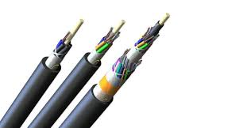
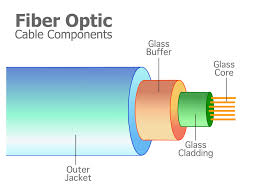

What I Want to Do After High School
I am interested in studying Fiber Optics and Satellite Internet. Both connect to important computer networks that rely on protocols, bandwidth, and fault tolerance to deliver data. Whether the signal travels as analog data turned into digital bits and bytes, or across space as packets routed by routers, both fields shape how the world communicates.
Fiber Optics vs Satellite Internet
| Fiber Optics | Satellite Internet |
|---|---|
|  Uses strands of glass to transmit light signals with high bandwidth. Reliable because of redundancy in the physical network. Often has low roundoff error and allows nearly lossless transmission. | Uses satellites to beam data across long distances. Works globally but may have higher delay due to packet travel along the path. Requires fault tolerant systems because of weather or orbital issues. |
Extra Notes: Fiber vs Satellite
In my words: Fiber sends data through thin glass threads at super-fast speeds with very little delay, which makes it excellent for gaming, streaming, and big uploads. Satellite internet, on the other hand, is great for people in remote places because it can reach anywhere, though it costs more and sometimes slows down in bad weather.
Fun fact: A single fiber-optic cable can carry more information per second than hundreds of copper cables combined!
How the Internet Works
The internet depends on many layers: IP addressing, TCP for reliable packet delivery, and systems like DNS and HTTP that make the World Wide Web usable.
Vocabulary
| Word | Definition |
|---|---|
| Bit | A binary digit, either 0 or 1, the smallest unit of data in computing. |
| Byte | A group of 8 bits, enough to represent one character like a letter or number. |
| Bandwidth | The maximum amount of data that can be transmitted over a network in a given time. |
| Fault Tolerance | The ability of a system to keep working even if part of it fails. |
| Redundancy | Having backup components so the system keeps running if one fails. |
| Path | The route that data packets take to travel across a network from source to destination. |
| Protocol | A set of rules that computers follow to communicate, like TCP or HTTP. |
| TCP | Transmission Control Protocol, ensures reliable delivery of packets over the internet. |
| IP | Internet Protocol, provides unique addresses so packets know where to go. |
| DNS | Domain Name System, translates website names (like google.com) into IP addresses. |
| HTTP | Hypertext Transfer Protocol, the foundation of data communication on the World Wide Web. |
| World Wide Web | The collection of websites and pages that are accessed using browsers over the internet. |